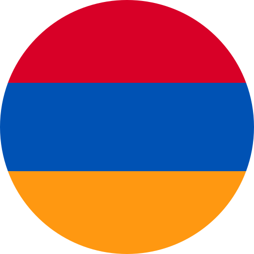

The self-study lessons in this section are written and organised by English level based on the Common European Framework of Reference for languages (CEFR). There are different types of texts and interactive exercises that practise the reading skills you need to do well in your studies, to get ahead at work and to communicate in English in your free time.Les leçons d'auto-apprentissage de cette section sont rédigées et organisées en fonction du niveau d'anglais, conformément au Cadre européen commun de référence pour les langues (CECRL). Vous y trouverez différents types de textes et d'exercices interactifs qui vous permettront de développer les compétences en lecture nécessaires pour réussir dans vos études, progresser au travail et communiquer en anglais pendant votre temps libre.Уроки самостоятельного обучения в этом разделе написаны и организованы в зависимости от уровня владения английским языком, согласно Общеевропейской системе описания языковых умений (CEFR). Здесь представлены различные виды текстов и интерактивные упражнения, которые помогут развить навыки чтения, необходимые для успешного обучения, продвижения на работе и общения на английском языке в свободное время.

Ի այս բաժնում կարող եք ուստի ու ավարտելու ընթացակագուների հիմնականները հիմնակագույն Եվրոպական Լեզուների Գործարքական արդիականության Հրատությունների հիման վրա: Տեքստերի մեջ ո՞ւ ի՞սպատակելիությունների տեսքերում են առաջարկվում և ինչպես անարդար կարող եք իշխանակել ու ազատ ժամանակում Հայերեն խոսել: